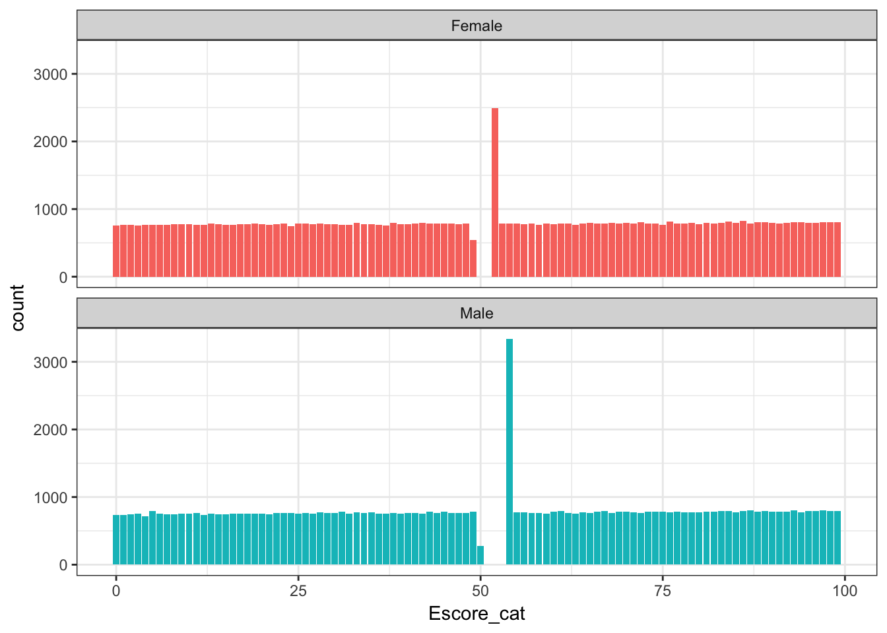
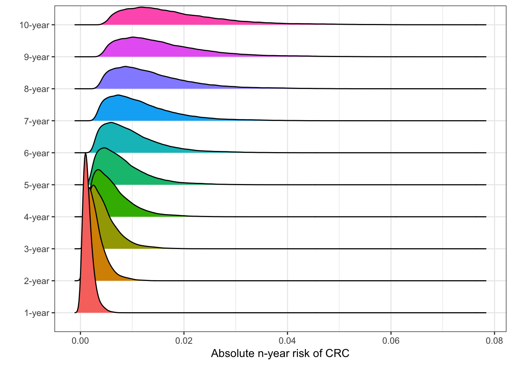
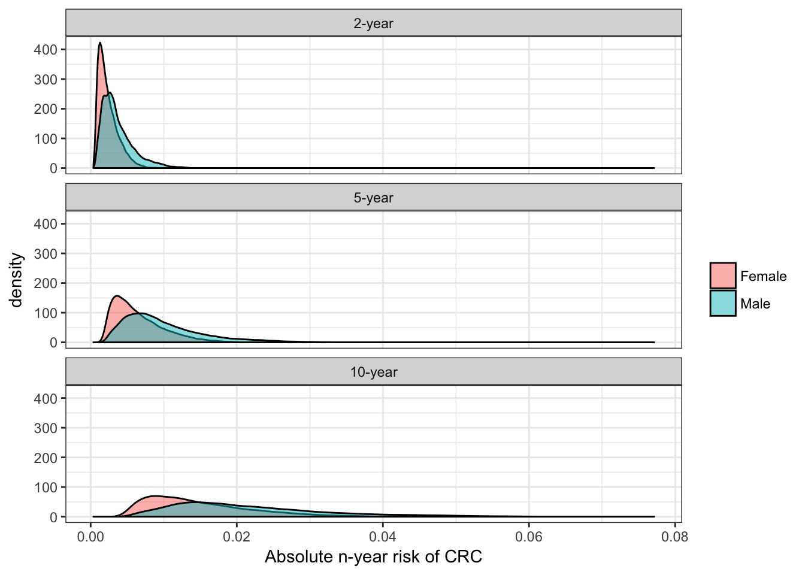
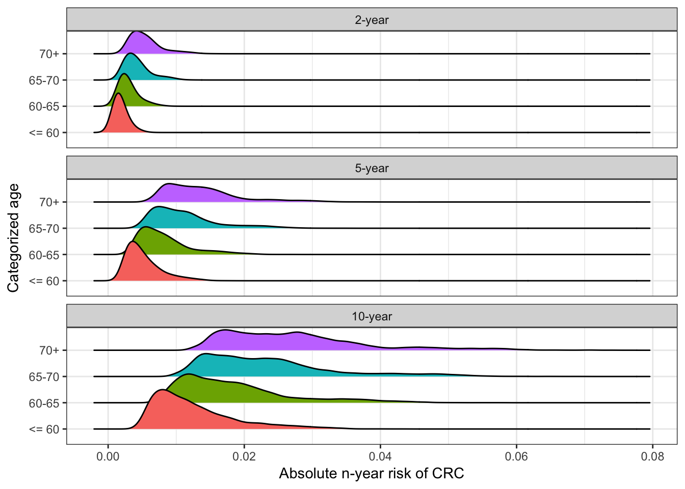

Notes from Jihyoun on July 11, 2017
I constructed an E-score based on the following variables: height, BMI, diabetes, aspirin use, Non-aspirin NSAIDS use, ever smoked, smoking pack-years, postmenopausal hormone use (females only), education.
The “missind_any” is an indication variable for whom was missing at least one variable among variables used for the E-score. I used sex-specific mean imputation for missing data in the analysis.
I constructed an “E-score” for each individual by taking the weighted sum of environmental and lifestyle risk factors, where weights were estimated from a multivariate logistic regression analysis. Then I recoded the E-score as sex-specific percentile based on cut points in controls (“Escore_cat”), and modeled as an ordinal variable.
The absolute risk for CRC was estimated by varying follow-up length since the baseline: 1-year, 2-year,….., 20-year. These are codes as prob1, prob2,…., prob20. These risk estimates are based on a person’s risk profile for Escore_cat, family history, and endoscopy history.
For individuals who are missing for age at reference, the absolute risk for CRC couldn’t be computed.
I only computed the absolute risk for CRC for “Whites” in the current data set. We can discuss later whether we want to extend it to the other races.

| sex | minimum | q1 | median | mean | q3 | maximum |
|---|---|---|---|---|---|---|
| Female | 0 | 25 | 52 | 49.89 | 75 | 99 |
| Male | 0 | 25 | 54 | 50.09 | 75 | 99 |

| year | median risk (25th, 75th percentile) |
|---|---|
| 1-year | 0.001 (0.001, 0.002) |
| 2-year | 0.003 (0.002, 0.004) |
| 3-year | 0.004 (0.003, 0.006) |
| 4-year | 0.005 (0.004, 0.008) |
| 5-year | 0.007 (0.005, 0.01) |
| 6-year | 0.009 (0.006, 0.013) |
| 7-year | 0.01 (0.007, 0.015) |
| 8-year | 0.012 (0.008, 0.018) |
| 9-year | 0.014 (0.01, 0.02) |
| 10-year | 0.016 (0.011, 0.023) |

| sex | 2-year | 5-year | 10-year |
|---|---|---|---|
| Female | 0.002 (0.001, 0.003) | 0.006 (0.004, 0.008) | 0.013 (0.009, 0.019) |
| Male | 0.003 (0.002, 0.005) | 0.009 (0.006, 0.012) | 0.019 (0.014, 0.027) |
Median (25th, 75th percentiles) absolute, 2, 5, and 10 year risk of CRC stratified by sex.

| age_cat | 2-year | 5-year | 10-year |
|---|---|---|---|
| <= 60 | 0.002 (0.001, 0.002) | 0.004 (0.003, 0.006) | 0.011 (0.008, 0.015) |
| 60-65 | 0.003 (0.002, 0.004) | 0.007 (0.005, 0.01) | 0.017 (0.012, 0.022) |
| 65-70 | 0.004 (0.003, 0.005) | 0.01 (0.008, 0.013) | 0.022 (0.016, 0.028) |
| 70+ | 0.005 (0.004, 0.006) | 0.013 (0.01, 0.016) | 0.026 (0.019, 0.032) |
Median (25th, 75th percentiles) absolute, 2, 5, and 10 year risk of CRC stratified by age.